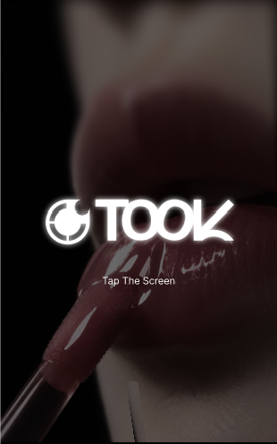
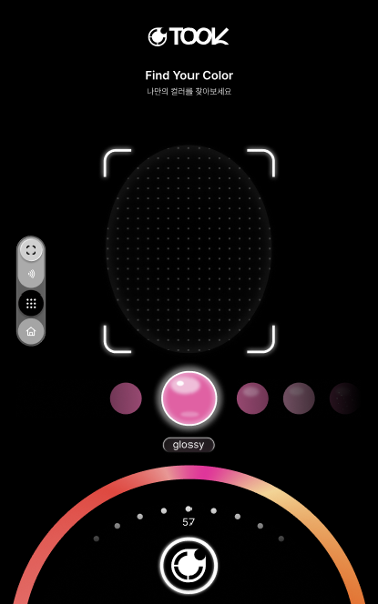
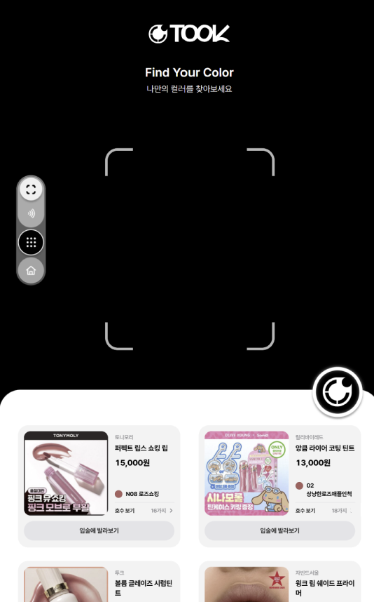
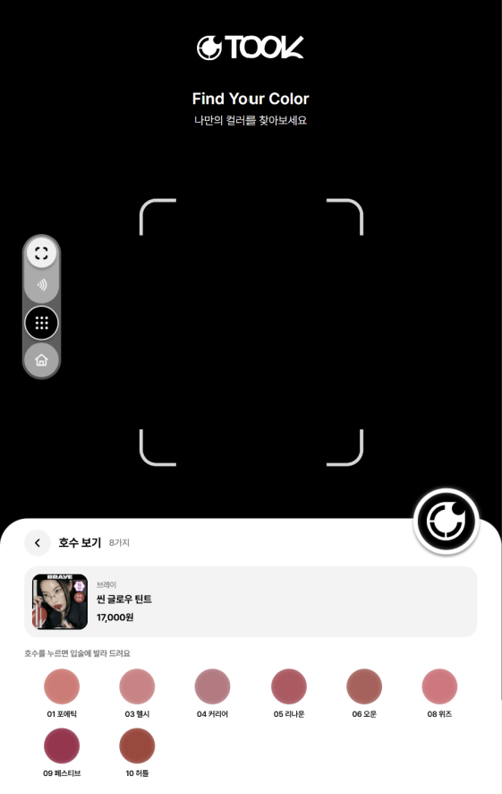
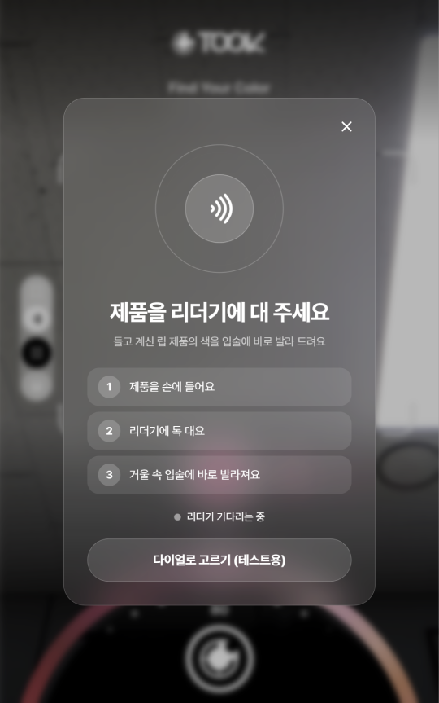
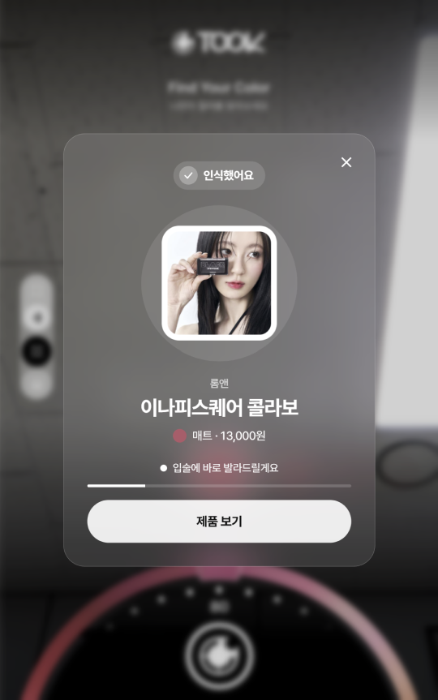
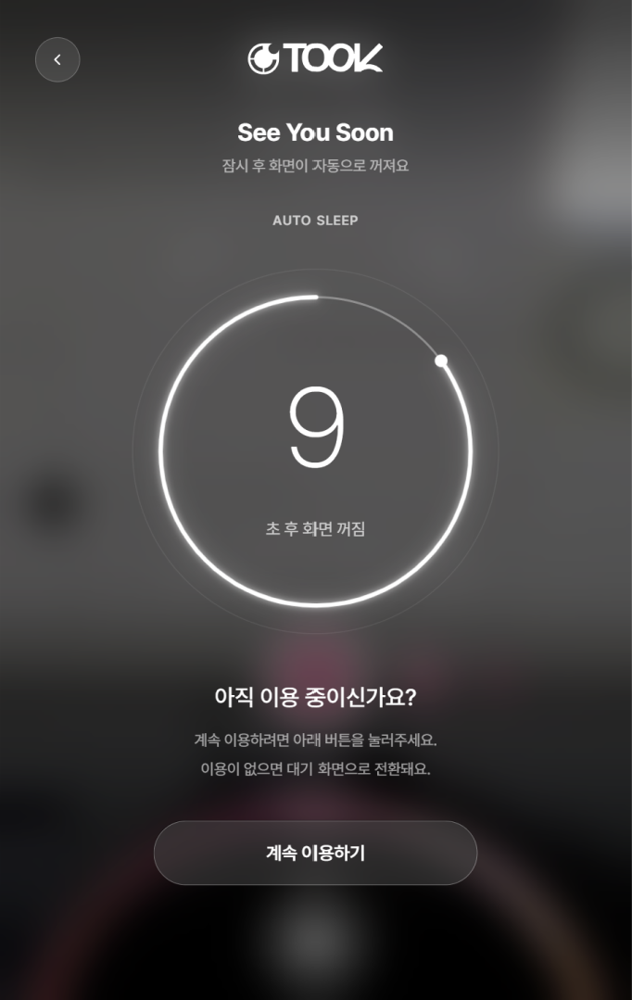

매장 방문객의 시선을 유도하기 위해 시작 화면에는 올리브영 매장에서 볼 수 있는 화장품 광고와 유사한 제품 중심 광고 영상이 재생된다. 립 제품의 패키지와 발색, 입술 연출 장면 등을 통해 제품의 색상과 질감을 시각적으로 보여주며, 화면에는 툭 로고를 배치한다. 화면을 터치하면 광고가 종료되고 별도의 메뉴 없이 툭 스마트 미러 서비스로 전환된다. 한국어와 영어 간 언어 전환 기능도 제공한다.
To draw the attention of store visitors, the start screen plays a product-focused video similar to the cosmetics ads seen in Olive Young stores. Scenes of lip packaging, swatches and lip close-ups show the color and texture of the products, with the TOOK logo placed on screen. Touching the screen ends the video and switches straight to the TOOK smart mirror service, with no menu in between. The screen also offers a Korean/English language toggle.
거울 화면은 툭의 핵심 인터페이스로, 웹캠 영상이 세로형 디스플레이를 가득 채우도록 구성했다. 얼굴이 인식되면 가이드 라인이 얼굴을 트래킹하며, 체험은 맨입술 상태에서 시작한다. 컬러 링으로 빨강·핑크·오렌지·누드 등 28가지 계열의 색상을 선택하고, 안쪽 흰색 포인트 링으로 발색 농도를 조절한다. 상단 원형 컨트롤을 좌우로 움직이면 매트·글로시·새틴·쉬어·쉬머의 다섯 가지 질감으로 전환된다. 11월 20일 인터내셔널 멘토링 피드백을 반영해 지문 발생을 최소화하도록 조작 요소를 하단에 집중 배치하고, 얼굴이 비치는 영역은 비워두었다.
The mirror screen is TOOK’s core interface, with the webcam feed filling the portrait display. Once a face is recognized, guide lines track it, and every session starts with bare lips. The color ring selects from 28 colors across the red, pink, orange and nude families, and the inner ring of white points adjusts the color intensity. Moving the circular control above it left or right switches between five finishes: matte, glossy, satin, sheer and shimmer. Reflecting feedback from the international mentoring session on November 20, the controls are concentrated at the bottom to minimize fingerprints, leaving the area where the face appears clear.


다이얼 중앙의 로고 버튼을 누르면 화면 하단에 제품 시트가 나타난다. 상단의 거울 화면은 그대로 유지되어 입술 색상을 확인하면서 제품을 비교할 수 있다. 제품은 현재 입술 색상과의 차이를 나타내는 ΔE2000 값을 기준으로 정렬하며, 광고에 따른 순위 조정은 적용하지 않는다. 각 카드에는 제품 이미지, 브랜드, 제품명, 가격, 선택된 호수 정보가 표시된다. ‘입술에 발라보기’를 선택하면 색상이 입술에 맵핑된다.
Pressing the logo button in the center of the dial brings up the product sheet at the bottom of the screen. The mirror above stays in view, so users can compare products while checking their lip color. Products are sorted by ΔE2000, the color difference from the current lip color, and no ranking adjustment for advertising is applied. Each card shows the product image, brand, name, price and selected shade. Selecting “Try on lips” maps the color onto the lips.
제품 카드의 ‘호수 보기 N가지’를 누르면 같은 시트 안에 호수 화면이 나타난다. 상단에는 선택한 제품 카드가 유지되며, 하단에는 실제 호수가 번호와 이름과 함께 정렬된다. 원하는 호수를 선택하면 별도의 적용 버튼 없이 입술 색상이 즉시 반영된다. 호수 정보는 올리브영 온라인 상품 옵션 데이터를 기반으로 구성해 실제 매장에서 판매되는 제품과 가상 발색 경험을 연결하도록 했다.
Pressing “View N shades” on a product card opens the shade view within the same sheet. The selected product card stays at the top, and the actual shades are listed below with their numbers and names. Choosing a shade updates the lip color immediately, without a separate apply button. The shade information is built on Olive Young’s online product option data, linking the virtual try-on to products actually sold in stores.


NFC 태그 기능은 색상 다이얼을 직접 조작하지 않고, 사용자가 가지고 있는 립 제품을 가상 발색으로 연결하는 기능이다. NFC 메뉴를 선택한 뒤 제품의 태그 부분을 리더기에 가까이 대면 별도의 실행 버튼 없이 자동으로 인식되어 해당 색상이 입술에 적용된다. 제품 이미지와 이름을 약 2초간 보여준 뒤 해당 제품의 호수 시트로 자동 전환된다. 등록되지 않은 태그가 인식되면 물음표(?)를 표시해 인식 실패를 안내하고, 다시 태그할 수 있도록 안내 화면으로 돌아간다.
NFC tagging connects a lip product the user is holding to the virtual try-on, without operating the color dial. After selecting the NFC menu, the user brings the product’s tag close to the reader; it is recognized automatically with no extra button, and its color is applied to the lips. The product image and name appear for about two seconds before the screen switches to that product’s shade sheet. If an unregistered tag is read, a question mark (?) signals the failure and the screen returns to the guide so the user can tag again.
90초 동안 조작이 없으면 ‘잠시 후 다시 만나요’ 화면이 거울을 덮고, 줄어드는 흰색 원으로 10초간 카운트다운을 표시한다. 사용자가 화면을 터치하거나 ‘계속 이용하기’를 선택하면 카운트다운이 취소되고 이전 화면으로 돌아간다. 10초가 지나면 선택한 색상과 언어 설정을 초기화한 뒤 시작 화면으로 자동 전환된다. 매장 키오스크에서 사용자가 별도 종료 없이 자리를 떠나는 상황에 대비해, 이전 사용자의 선택 정보가 다음 사용자에게 노출되지 않도록 했다.
After 90 seconds without input, a “See you soon” screen covers the mirror and a shrinking white circle counts down ten seconds. If the user touches the screen or selects “Keep using,” the countdown is canceled and the previous screen returns. After ten seconds, the selected colors and language setting are reset and the screen switches to the start screen automatically. Because users often walk away from a store kiosk without ending their session, this keeps one user’s choices from being shown to the next.


